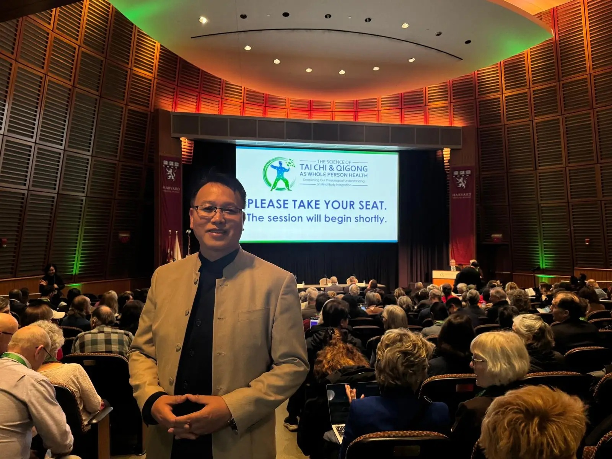
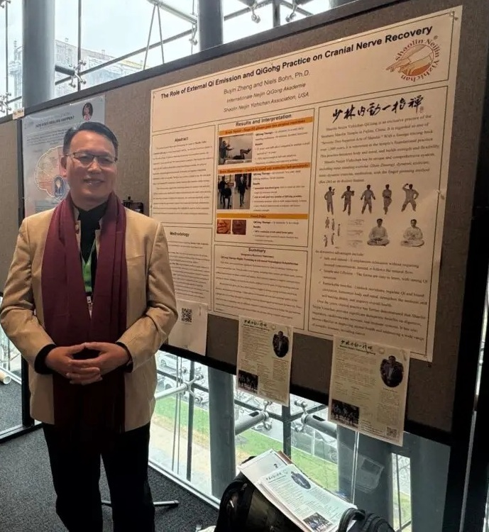
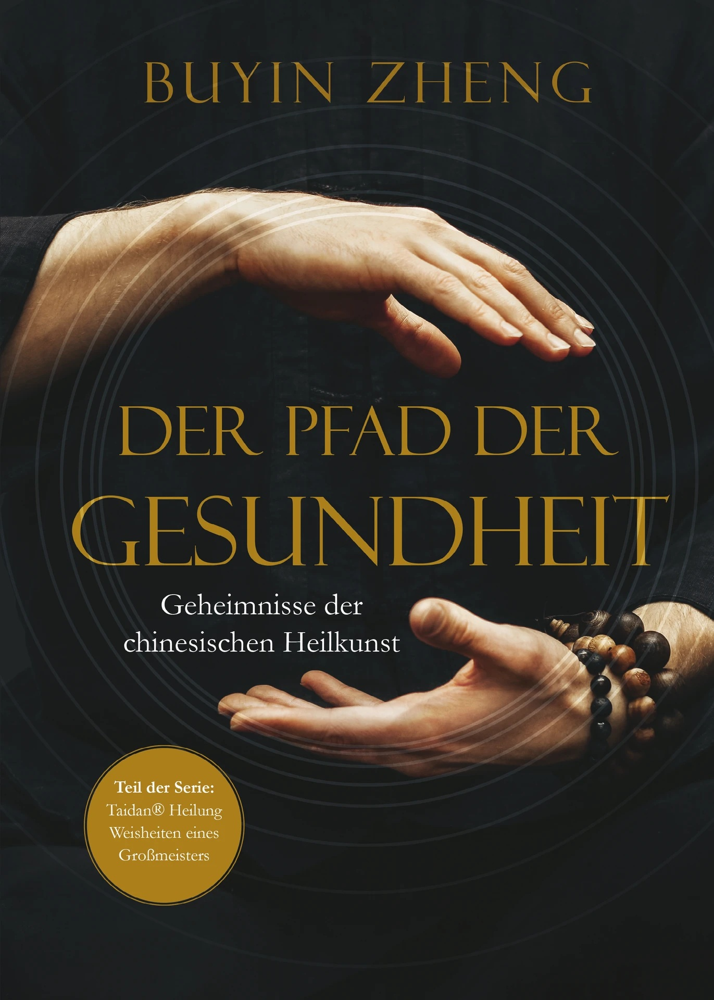

新闻 / 活动中心
欢迎来到新闻与活动中心。这里汇集了最新动态、课程信息、静修活动、 学习资源及多媒体内容，为您提供持续学习、交流与成长的平台。
新闻/活动/灵感启迪
在本栏目中，您将发现关于少林内劲气功的最新见解、启发性文章与行业资讯。 通过阅读不同的思想、经历与故事，探索通往健康、宁静与充满活力生活的新方向， 为个人修行与成长不断注入新的灵感。
1，郑博音大师参加2026年哈佛医学院主办的”太极与气功与身心整体健康的科学”研讨会
气功大师郑博音与来自全球和北美近30多个国家地区的学者专家，在这场关于身心整体健康的医学顶级学术会议上，就传统气功对身心康复的重要作用进行深入探讨，并首次将他在气功和“外气发放”疗法（包括针对中风后遗症的治疗）方面的丰富经验，带入了国际科学界的探讨之中，展示气功及“外气发放”疗法对中风康复的明显疗效。

博音大师指出：利用气功促进神经再生（例如在中风之后）正变得日益重要。今年春天，我有幸向国际专业人士展示了我在这一领域的研究成果。此次展示是波士顿哈佛大学医学院奥舍整合健康中心（Osher Center for Integrative Health）举办的“太极与气功：身心整体健康”（Tai Chi & Qigong as Whole Person Health）会议的一部分，该会议由哈佛医学院与布列根和妇女医院（Brigham and Women’s Hospital）联合举办。
我首次在此展示了学术海报。海报聚焦于一个我多年来持续研究的课题：气功与“外气发放”疗法（即定向能量传输）在神经再生——特别是在中风或神经系统手术之后——可能发挥的作用。
许多人在经历此类事件后，运动功能会受到严重限制——行走或抓握能力受阻，进而影响生活质量与自主生活的能力。然而，在我的医疗气功实践中，我发现针对性的练习与能量疗法能够有效支持身体机能的恢复，重新建立大脑与身体之间的联系。特别是在针对中风患者的气功疗法领域，这为康复开辟了超越单纯机械性康复训练的新途径。

这是将传统气功实践经验与现代研究需求相结合迈出的第一步，也是连接千年古老智慧与现代整合医学的一座桥梁。 气功与“外气发放”疗法：强化内在身心整合、呼吸调节与能量平衡 特别是在颅神经再生方面，事实证明，除了肢体运动外，内在的身心整合、呼吸调节以及能量平衡同样发挥着至关重要的作用。气功练习与“外气发放”疗法的结合，有助于增强机体的自我调节能力，并激发康复动力。 会议期间，我与来自各国的医生、研究人员及治疗师进行了坦诚深入的交流。大家对针对神经系统疾病的气功疗法以及神经再生的整体疗法表现出了浓厚的兴趣。同时，这也凸显了进一步研究这些方法并将其融入现代健康理念的巨大潜力。 我并不将此次展示视为终点，而是一个新的起点。我的目标是让更多人了解气功的潜力——特别是在神经修复与康复领域——并致力于在实践与科学之间架起沟通的桥梁。
2，郑博音大师首次来到南加州
【少林内劲一指禅】第20代传承人、气功大师郑博音先生2026年4月16日首次来到南加州，在尔湾大学（UCI）为公众带来一场难得的 「气功与自我疗愈」公益讲座与体验课！

公益课上，博音大师介绍了凝聚1500多年少林能量修炼精华的【少林内劲一指禅气功】，强调其养生、康复、疗愈与医学气功 的高级修炼功法。大家跟随大师开始练习脊柱动功及马步站桩。博音大师指出，通过坚持练习，可以帮助 疏通经络、调和气血、平衡阴阳、协调脏腑，让身体逐渐回归自然与和谐的状态。在忙碌与高压力的现代生活中，重新找回 精、气、神的平衡，提升身心能量与健康。
3，郑博音大师首次到访新泽西州
2026年5月6日，博音大师首次来到美东新泽西Princeton，为社区带来一场生动精彩的“气功与自我疗愈”公益课。

作为【少林内劲一指禅】第20代传承人，博音大师心怀慈悲，不遗余力为公众传播身体的自愈之道。公益课上，博音大师介绍了凝聚1500多年少林能量修炼精华的【少林内劲一指禅气功】，强调其养生、康复、疗愈与医学气功 的高级修炼功法。大家也在大师的带领下开始探索学习。在忙碌与高压力的现代生活中，重新找回 精、气、神的平衡，提升身心能量与健康，是我们大家追求的目标，也是内劲一指禅千年功法可以利益大众之道。
更多的新闻/活动信息...
新闻/活动信息4...
新闻/活动信息5,,,
新闻/活动信息6...
新闻/活动信息7...
如果您需要更多的新闻/活动信息，请点击链接：更多新闻与故事信息
咨询与健康
郑博音大师携手专业理疗团队，在德国杜塞尔多夫（Düsseldorf）与菲尔特（Fürth） 提供个别咨询与健康辅导，帮助来访者改善身心健康， 并在人生的重要阶段获得专业支持与建议。
如果您需要更多信息，请联系我们德国总部： 咨询与健康
图片集锦
图片记录了课程、研讨会、静修营以及日常练功的精彩瞬间， 展现气功带来的健康、喜悦与身心变化。


- 缓解压力，调节神经系统，改善焦虑与失眠。
- 促进气血循环，增强身体免疫能力。
- 改善体态，缓解肩颈与腰腿不适。
更多图片集锦下载专区： 图片集锦下载
学员见证
来自不同国家和年龄层的学员分享他们学习少林内劲气功后的真实体验。 从改善健康、提升生活品质，到培养内心平静与专注力， 每一段经历都见证着持续修炼所带来的积极改变。
更多见证…
学员见证音频专区： 学员见证音频专区
学员见证视频专区： 学员见证视频专区
资料下载
提供课程资料、练功说明、练习记录表及其他学习文件， 方便您随时下载并作为日常修炼的参考。
基本信息： 基本信息
课程信息：课程信息
其他资料： 其他资料下载
音频/视频专区
音频专区
郑博音大师的冥想音频将引导您放松身心、释放压力， 帮助建立更深层的平静、专注与内在平衡。 您也可以前往 YouTube 频道探索更多音频与引导练习。
音频下载： 音频下载
视频专区
通过简洁易懂的视频课程， 学习气功动作、养生方法及日常练习技巧。 无论初学还是进阶修炼， 都能从中获得实用指导与持续启发。
教学视频：
视频下载： 视频下载
著作/出版物
著作
郑博音大师的著作系统介绍少林内劲气功、 传统中医养生理念及日常实践方法。 内容深入浅出，帮助读者将传统智慧自然融入现代生活， 提升健康、修养与生命品质。
《正统中国传统气功》
作者：郑博音

“生命重于一切……”
怀着这一深刻的理念，气功大师郑步印为读者开启了通往正统气功的大门。他指明了一条清晰有效的途径，帮助人们有意识地增强体质、预防疾病，并激发身体与生俱来的自愈能力。
本书将扎实的理论知识与可立即付诸实践的功法完美结合。书中对功法的讲解清晰易懂，并配有大量插图，便于读者快速上手并获得亲身体验。
正统中国传统气功》适合每一位渴望健康、内心宁静与身心平衡的人士。无论是初学者还是资深练习者，都能从中获得宝贵的启示。此外，本书也是医务工作者、治疗师及气功教练的实用教学与参考指南。
试读章节： 试读章节下载（德文）
《保持健康——重获健康》
作者：郑博音

有一种愿望将所有人联系在一起：那就是对健康与内心平衡的深切渴望。
拥有数千年历史的中国传统疗愈技艺，为实现这一愿望提供了一条简单而有效的途径。当你能够重新与自然和谐共处，有意识地感知四季的律动，并善用经络的益处时，显著的改变便会悄然发生——引领你一步步重获更佳的身心状态。
本书通过生动且实用的案例，直面当今时代的健康挑战，并展示了任何人如何利用简单、自然的方法来增强、维护甚至重建健康。
试读章节： 试读章节下载（德文）
《健康之道——中国疗愈艺术的奥秘》
作者：郑博音

在中国古代，若能让患者保持健康，便被视为医术高明的典范。时至今日，追求身、心、灵的内在平衡，依然是中国整体疗愈艺术的最高宗旨——即致力于维护健康。而疗愈，始终是可能的。
如何践行这条健康之道？
本书汇集了郑步印大师的智慧，为读者指明了通往“健康之道”的清晰路径，并展示了如何构建和谐与内心充实的生活。
本书基于阴阳与五行理论，深入浅出地阐释了脏腑与情绪之间的相互关联。每一章末尾均附有实用建议，引导您将所学知识直接应用于日常生活之中。
试读章节： 试读章节下载（德文）
出版物
除个人著作外，本栏目还收录各类出版物、文章及研究资料， 从不同角度介绍气功、传统文化与整体健康理念， 为持续学习与深入研究提供丰富参考。